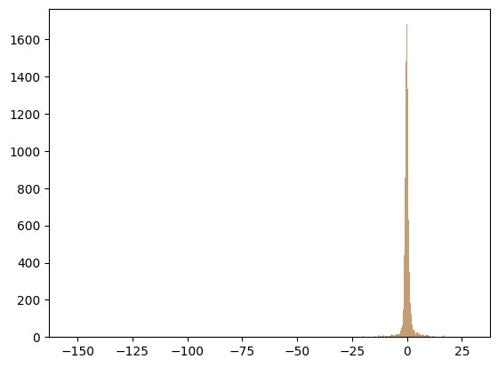

[1]:
import pandas as pd, matplotlib.pyplot as plt, numpy as np
import statsmodels.api as sm
lm = sm.WLS
from csdid.att_gt import ATTgt
df = pd.read_csv('../data/r_cohort.csv')
r_inf = pd.read_csv('../data/r_inf.csv')
df.head()
[1]:
| customer_id | ttm_gms | wplus | prime | time_period | treatment | ln_gms | first.treat | cohort | customer_id_num | post | treat | |
|---|---|---|---|---|---|---|---|---|---|---|---|---|
| 0 | Pa0jpC-Dv2fTYelpx8erNpaYw | 1643.55 | wp_never | npa | 1 | 0 | 7.404614 | 0 | 0 | 8681 | 0 | 0 |
| 1 | Pa0E0tPLH1dQ6qalsrWJ8lpxA | 1405.19 | wp_never | npa | 1 | 0 | 7.247928 | 0 | 0 | 5683 | 0 | 0 |
| 2 | Pa0mRRL9DhSRqOah4yOYKMpaw | 46839.30 | wp_never | npa | 1 | 0 | 10.754478 | 0 | 0 | 10307 | 0 | 0 |
| 3 | Pa0_dznuzjsRv6GDlIw1pLTsQ | 631.88 | wp_never | npa | 1 | 0 | 6.448700 | 0 | 0 | 367 | 0 | 0 |
| 4 | Pa05HYdf_XvTb-aN6Mx2ws4iA | 134.95 | wp_never | npa | 1 | 0 | 4.904904 | 0 | 0 | 2128 | 0 | 0 |
[2]:
def reg_did_panel(y1, y0, D, covariates, i_weights=None):
D = np.asarray(D).flatten()
n = len(D)
deltaY = np.asarray(y1 - y0).flatten()
int_cov = np.ones((n, 1))
if covariates is not None:
covariates = np.asarray(covariates)
if np.all(covariates[:, 0] == 1):
int_cov = covariates
else:
int_cov = np.column_stack((np.ones(n), covariates))
if i_weights is None:
i_weights = np.ones(n)
elif np.min(i_weights) < 0:
raise ValueError("i_weights must be non-negative")
i_weights = i_weights / np.mean(i_weights)
mask = D == 0
X = int_cov[mask]
y = deltaY[mask]
w = i_weights[mask]
# reg_coeff = np.linalg.lstsq(X * w[:, np.newaxis], y * w, rcond=None)[0]
reg_coeff = lm(y, X, weights=w).fit().params
print(reg_coeff)
if np.any(np.isnan(reg_coeff)):
raise ValueError("Outcome regression model coefficients have NA components. \n Multicollinearity (or lack of variation) of covariates is probably the reason for it.")
out_delta = np.dot(int_cov, reg_coeff)
w_treat = i_weights * D
w_cont = i_weights * (1 - D)
reg_att_treat = w_treat * deltaY
reg_att_cont = w_cont * out_delta
eta_treat = np.mean(reg_att_treat) / np.mean(w_treat)
eta_cont = np.mean(reg_att_cont) / np.mean(w_cont)
reg_att = eta_treat - eta_cont
weights_ols = i_weights * (1 - D)
wols_x = weights_ols[:, np.newaxis] * int_cov
wols_eX = weights_ols[:, np.newaxis] * (deltaY - out_delta)[:, np.newaxis] * int_cov
XpX_inv = np.linalg.inv(np.dot(wols_x.T, int_cov) / n)
asy_lin_rep_ols = np.dot(wols_eX, XpX_inv)
inf_treat = (reg_att_treat - w_treat * eta_treat) / np.mean(w_treat)
# print(np.sum(w_treat * eta_treat))
inf_cont_1 = (reg_att_cont - w_cont * eta_cont)
M1 = np.mean(w_cont[:, np.newaxis] * int_cov, axis=0)
inf_cont_2 = np.dot(asy_lin_rep_ols, M1)
inf_control = (inf_cont_1 + inf_cont_2) / np.mean(w_cont)
reg_att_inf_func = (inf_treat - inf_control)
se_reg_att = np.std(reg_att_inf_func) / np.sqrt(n)
return reg_att, reg_att_inf_func
[3]:
out = ATTgt(yname="ln_gms",gname="first.treat", idname="customer_id_num",
tname="time_period", data=df).fit(est_method=reg_did_panel)
# Display the results
out.summ_attgt().summary2
[-0.07668271]
[3]:
| Group | Time | ATT(g, t) | Post | Std. Error | [95% Pointwise | Conf. Band] | ||
|---|---|---|---|---|---|---|---|---|
| 0 | 2 | 2 | -0.0746 | 0 | 0.0316 | -0.134 | -0.0153 | * |
[4]:
inf_py = out.inf_f[0]
# len(r_inf), len(inf_py)
r_inf['py'] = inf_py
r_inf['diff_2'] = r_inf['inf1'] / r_inf['py']
[5]:
r_inf.shape
[5]:
(17497, 3)
[6]:
r = r_inf['inf1'].values
py = out.inf_f[0]
plt.scatter(r, py)
[6]:
<matplotlib.collections.PathCollection at 0x234cb706fb0>

[7]:
plt.hist(r, label="r", alpha = 0.5, bins = 1000)
plt.hist(py, label="r", alpha = 0.5, bins = 1000)
plt.show()

[10]:
r_inf['diff_2'].describe()
[10]:
count 1.749700e+04
mean 1.000000e+00
std 3.329477e-14
min 1.000000e+00
25% 1.000000e+00
50% 1.000000e+00
75% 1.000000e+00
max 1.000000e+00
Name: diff_2, dtype: float64